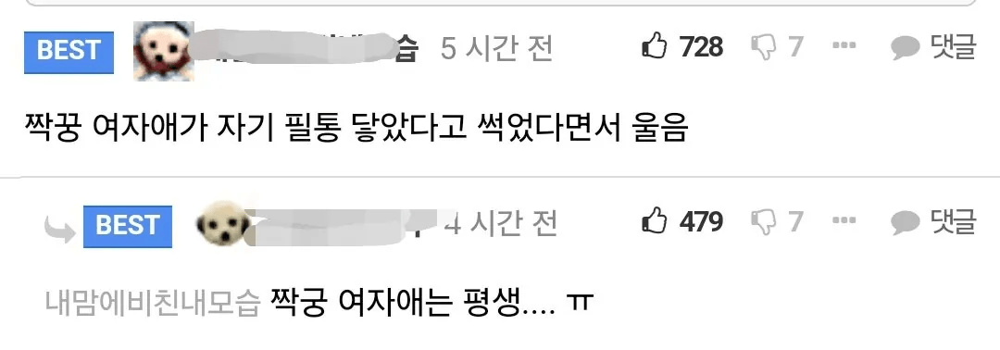

수학여행갈때 버스 혼자앉음
밥먹을때 원탁식탁에 혼자앉아서 눈치보면서 반도안먹음
여자애들이랑 강아지 놀이 하고 놀음
줄넘기로 내 목에 감고 왈왈이라고 부르면서 머리도 쓰다듬고 몸도 마구 만졌음
좋았음
그래서취향이 그렇게됬다는말씀이시구ㅜㄴ요.정상참작의여지 없어보이지만 일단기재는해두죠
이정도면 참작 좀 해 줘라 ㅋㅋㅋㅋㅋㅋㅋㅋㅋ
살아있어줘서 고맙다
초딩때 같은 반 여자애들이랑 병원 놀이 하다가 건전지였나 수은전지였나 그게 여자애 똥꼬에 들어가서 안나와서 엄청 울었었음. 나중에 나오긴 나옴.
그걸 어쩌다 넣은 거야..
나도 기회만 있다면 다시 돌아가서 확인해보고 싶다... 도대체 어쩌다 들어간 건지...
뭐 좌약 넣기 같은거 했겠지
초등학교 때 학교에서 숨바꼭질 하다가 여자애랑 엄청 좁은 캐비넷 같은 데에서 같이 숨었는데 거친 숨 쉬면서 서로 딱 붙어 있으니 기분이 아주 이상했음. 그 뒤로도 숨바꼭질 할때면 일부러 둘이 같이 숨다가 나중에
더보기 시발
어릴때라 어차피 니가원하는 결말 안나와
나도 숨바꼭질하다가 비슷한 경험ㅎㅎ나중에 성인되서 몇번 만났음 ㅎㅎ
초2때 이사가게되었다고 하니까 문방구 아저씨가 오빠는 팬더지갑, 나는 핑크색 공주지갑 선물로주셨는데
그안에 3만원씩 들어 있었음.. 지금 생각해도 큰돈인데 너무고마웠음
그 후로 공주로 지냄?
건물구석에 만원떨어진거주움
이거맞음 친구랑 같이 돈쥬앙 이라고 써있는 친구형꺼 cd 컴퓨터에 넣고 같이봤는데 서로 대딸해줬음
초딩때 하교하고 집에오니 집에있던 장난감이 싸그리버려짐
이거 볼때마다 만약 그 아저씨가 천원을 꺼내 줬다면 하수구에 500원 버리는 어린이가 됐을거같단 상상을 마구함
초등학생때 어른들 보면 인사하고 쓰레기 보이면 무조건 주웠음
그러면 상가 사장님들이 항상 좋게봐주고 용돈주고 과일이나 과자같은거 귀엽다고 막 주셨었는데
그때의 좋은 기억이 양분이 되서 지금도 어른들 뵈면 항상 인사하고 길거리에 방해되는건 다 치우고다님 ㅎㅎ